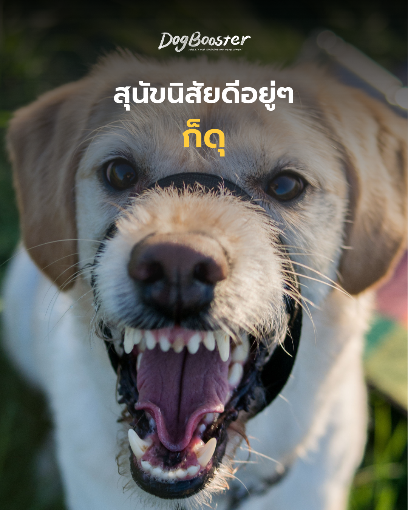

“น้องไม่เคยเป็นแบบนี้มาก่อนเลยค่ะ อยู่ ๆ ก็ขู่ตอนอุ้ม” — ประโยคแบบนี้เป็นสิ่งที่เจ้าของสุนัขหลายคนพูดออกมาด้วยความสับสนและเสียใจ
สุนัขที่เคยเป็นมิตร ชอบให้ลูบหัว นอนตักได้ทั้งวัน จู่ ๆ ก็ขู่หรือกัดเมื่อถูกสัมผัสในบางจุด ในทางพฤติกรรมศาสตร์ นี่คือสัญญาณที่ควรตั้งคำถามก่อนเสมอว่า “ตัวเขาเจ็บอยู่หรือเปล่า”
สุนัขดุเพราะเจ็บ หรือ Pain-Induced Aggression เป็นหนึ่งในสาเหตุของพฤติกรรมก้าวร้าวที่ถูกมองข้ามบ่อยที่สุด เพราะสุนัขไม่สามารถพูดบอกเราตรง ๆ ได้ว่า “ตรงนี้เจ็บ”
เมื่อร่างกายสุนัขรับรู้ความเจ็บปวด (nociception) สัญญาณจะถูกส่งไปยังสมองอย่างรวดเร็ว กระตุ้นระบบประสาทอัตโนมัติให้หลั่งอะดรีนาลีนและคอร์ติซอล ร่างกายเข้าสู่ภาวะเตรียมพร้อมสู้หรือหนี (fight-or-flight response) ทันที
สิ่งสำคัญคือ ความเจ็บปวดทำให้ เกณฑ์ความอดทนต่อสิ่งกระตุ้น (arousal threshold) ของสุนัขต่ำลงกว่าปกติมาก เดิมทีสุนัขอาจทนให้เด็กดึงหางเล่นได้ แต่เมื่อมีอาการปวดข้อหรือปวดหลังแฝงอยู่ พลังงานสำรองในการควบคุมตัวเอง (self-regulation) ก็ลดลง ทำให้ระบบสมองส่วนอารมณ์ (limbic system) ทำงานเหนือกว่าสมองส่วนหน้า (prefrontal cortex) ซึ่งปกติทำหน้าที่ยับยั้งชั่งใจและตัดสินใจอย่างมีเหตุผล
พูดง่าย ๆ คือ เมื่อเจ็บ สุนัขจะ “คิดไม่ทัน” และตอบสนองด้วยสัญชาตญาณล้วน ๆ นี่คือกลไกหลักที่อธิบายว่าทำไมสุนัขดุเพราะเจ็บจึงไม่ใช่การเลือกที่จะดุ แต่เป็นกลไกป้องกันตัวเองที่ร่างกายสั่งการโดยแทบไม่ผ่านการไตร่ตรอง
ก่อนที่จะถึงขั้นขู่หรือกัด สุนัขมักส่งสัญญาณเตือนมาก่อนเสมอ เพียงแต่สัญญาณเหล่านี้เบาและเรียบง่ายจนถูกมองข้าม เช่น
หากสังเกตเห็นสัญญาณเหล่านี้ร่วมกับพฤติกรรมก้าวร้าวที่เกิดขึ้นใหม่ ควรพาไปพบสัตวแพทย์เพื่อตรวจร่างกายอย่างละเอียดก่อนเป็นอันดับแรก ไม่ใช่รีบไปหาโปรแกรมฝึกพฤติกรรม
สุนัขไม่มีคำพูด สิ่งที่เขามีคือภาษากาย และเมื่อภาษากายทั้งหมด (เลี่ยงหน้า หันหน้าหนี ขู่เบา ๆ) ถูกละเลยหรือไม่ได้รับการตอบสนอง ขั้นตอนสุดท้ายที่เหลืออยู่คือการงับหรือกัด นี่คือเหตุผลที่นักพฤติกรรมสัตวแพทย์มักพูดถึง “บันไดแห่งความก้าวร้าว” (Ladder of Aggression) — การกัดมักไม่ใช่จุดเริ่มต้น แต่เป็นปลายทางของสัญญาณที่ถูกเพิกเฉยมาหลายขั้น
ในกรณีที่สุนัขดุเพราะเจ็บ สิ่งนี้ยิ่งชัดเจน เพราะสุนัขไม่ได้ต้องการ “ทำร้าย” เจ้าของ แต่ต้องการเพียงให้หยุดสัมผัสจุดที่เจ็บโดยเร็วที่สุด
ปรัชญาการฝึกแบบ games-based ของ Susan Garrett วางอยู่บนหลักที่ว่า พฤติกรรมที่ไม่พึงประสงค์มักมีสาเหตุที่ต้องแก้ไขก่อนเสมอ ไม่ใช่แค่ “หยุดพฤติกรรม” ด้วยการลงโทษ แนวคิดนี้สอดคล้องกับหลักการทางสัตวแพทยศาสตร์พฤติกรรมที่ว่า ก่อนเริ่มโปรแกรมฝึกพฤติกรรมใด ๆ ควรตัดปัจจัยทางการแพทย์ออกไปก่อนเสมอ (rule out medical causes first)
การลงโทษสุนัขที่ขู่เพราะเจ็บ ไม่เพียงไม่แก้ปัญหาที่ต้นเหตุ แต่ยังอาจทำให้สุนัขเรียนรู้ที่จะ ไม่ส่งสัญญาณเตือนอีกต่อไป (suppression) ซึ่งอันตรายกว่าเดิม เพราะครั้งต่อไปเขาอาจกัดโดยไม่มีการขู่เตือนล่วงหน้าเลย
สุนัขดุเพราะเจ็บ เป็นพฤติกรรมที่ควรถูกมองเป็น “สัญญาณเตือน” มากกว่า “ปัญหานิสัย” เสมอ ร่างกายและพฤติกรรมของสุนัขเชื่อมโยงกันอย่างแยกไม่ออก การเข้าใจกลไกนี้ไม่เพียงช่วยให้เจ้าของตอบสนองได้อย่างเห็นอกเห็นใจมากขึ้น แต่ยังช่วยป้องกันไม่ให้เกิดเหตุการณ์ที่รุนแรงขึ้นในอนาคตด้วย
หากสุนัขที่บ้านมีพฤติกรรมเปลี่ยนไปแบบนี้ อย่ารอช้า — ปรึกษาสัตวแพทย์ก่อนเป็นอันดับแรก แล้วค่อยวางแผนเรื่องพฤติกรรมร่วมกับผู้เชี่ยวชาญด้านการฝึกเชิงบวกในลำดับถัดไป
หากบทความนี้เป็นประโยชน์ อย่าลืมกดบันทึกและแชร์ไว้ให้เพื่อนเจ้าของสุนัขคนอื่น ๆ ได้อ่านด้วยนะคะ 🐾